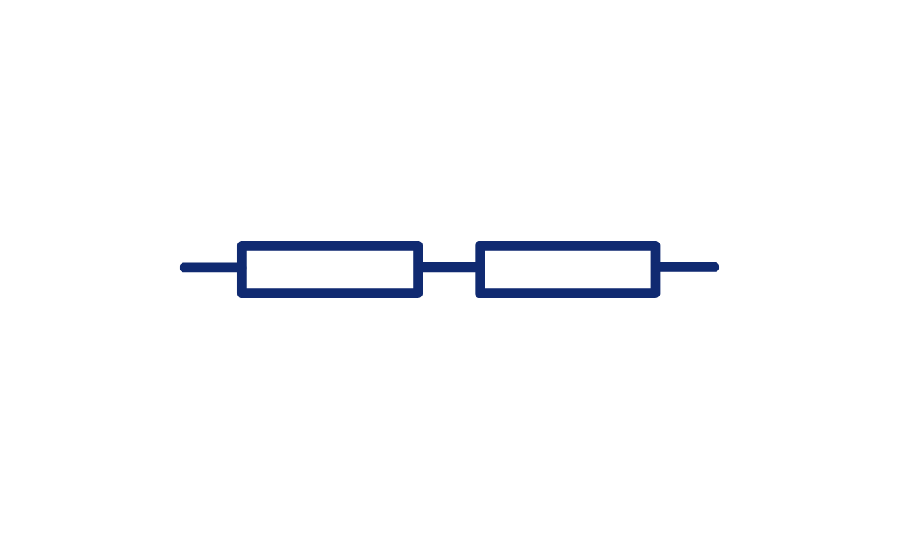
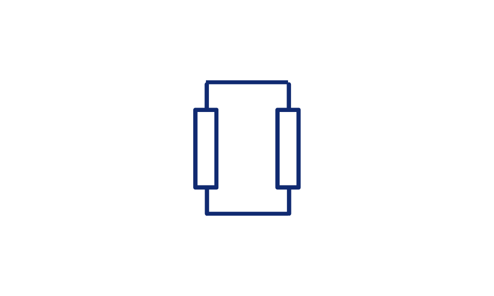
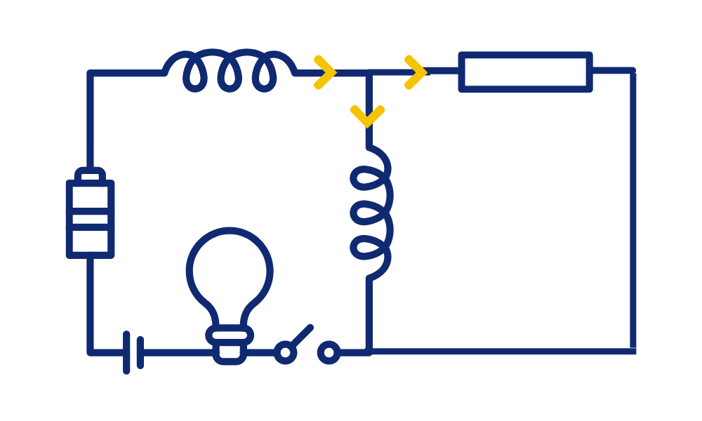
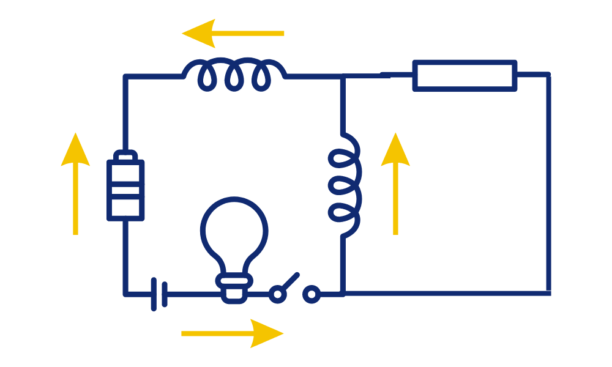
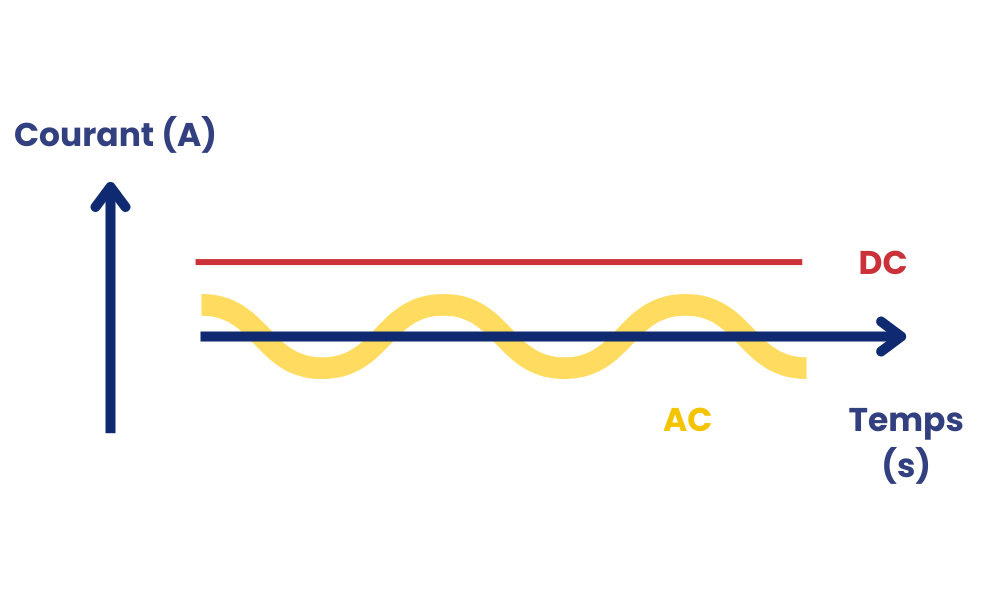

MODULE 3
LES BASES DES CIRCUITS ÉLECTRIQUES
Les branchements en série et en parallèle sont deux configurations courantes utilisées dans les circuits électriques pour connecter des composants tels que des résistances, des ampoules, des appareils électriques, etc.
Dans un circuit en série, les composants sont connectés les uns après les autres, de sorte que le courant électrique doit traverser chacun d'eux en séquence. Les composants sont disposés sur le même chemin. Le courant électrique est le même à travers tous les composants en série. Cela signifie que le courant est constant dans tout le circuit. La tension électrique totale dans un circuit en série est la somme des tensions à travers chaque composant.
Dans un circuit en parallèle, les composants sont connectés de manière à ce que chacun d'eux soit relié directement à la source d'alimentation. Les composants sont disposés de manière parallèle, offrant plusieurs chemins pour le courant électrique. Le courant électrique se divise entre les différents composants en parallèle. Chaque composant reçoit une partie du courant total.
La tension électrique à travers chaque composant en parallèle est la même. Tous les composants ont la même tension aux bornes.
Les lois de Kirchhoff sont deux principes fondamentaux en électricité qui décrivent la conservation de la charge électrique et de l'énergie dans un circuit électrique complexe. Ces lois sont nommées d'après Gustav Kirchhoff, un physicien allemand du 19e siècle.
Les deux lois de Kirchhoff sont les suivantes :
Loi des courants de Kirchhoff (loi des noeuds) :
Cette loi stipule que la somme algébrique des courants entrants et sortants à un nœud d'un circuit électrique est égale à zéro. En d'autres termes, la loi des courants de Kirchhoff affirme que la charge électrique ne s'accumule ni ne se perd au niveau d'un nœud. Cette loi garantit que la charge électrique est conservée, de sorte que la somme des courants entrants est égale à la somme des courants sortants à tout nœud dans un circuit.
Loi des tensions de Kirchhoff (loi des mailles) :
La loi des tensions de Kirchhoff énonce que dans une boucle fermée d'un circuit électrique, la somme algébrique des tensions appliquées sur chaque composant (résistance, pile, etc.) est égale à zéro. Cette loi reflète la conservation de l'énergie électrique dans un circuit. En d'autres termes, la somme des chutes de tension le long d'une boucle est égale à la somme des élévations de tension dans la boucle.

Le courant alternatif (AC) et le courant continu (DC) sont deux types de courants électriques qui diffèrent principalement par la manière dont les charges électriques se déplacent et la nature de leur tension.
Dans un circuit à courant alternatif, les charges électriques (généralement des électrons) se déplacent dans des directions qui changent périodiquement. Le courant inverse sa direction à intervalles réguliers, ce qui signifie que les électrons oscillent d'un côté à l'autre dans le conducteur. La tension dans un circuit à courant alternatif change de polarité à intervalles réguliers, créant une forme d'onde sinusoïdale.
La tension atteint un pic positif, puis traverse zéro, devient négative, traverse à nouveau zéro, et revient à son maximum positif. C'est ce que l'on appelle une tension alternative. La fréquence du courant alternatif, mesurée en hertz (Hz), indique le nombre de cycles complets de changement de polarité par seconde.
Dans de nombreux pays, la fréquence standard est de 50 ou 60 Hz. En France, la fréquence standard est de 50 Hz (hertz). Le courant alternatif est largement utilisé pour la transmission de l'électricité sur de longues distances à partir des centrales électriques. Il est également couramment utilisé dans les appareils ménagers et l'éclairage public.
Dans un circuit à courant continu, les charges électriques se déplacent toujours dans la même direction, de la borne positive à la borne négative de la source d'alimentation. La tension dans un circuit à courant continu reste constante dans le temps. Elle ne change pas de polarité de manière régulière. Le courant continu est caractérisé par sa stabilité.
Il est utilisé dans de nombreuses applications électroniques où une tension constante est nécessaire, comme les piles, les batteries, les circuits électroniques, et les dispositifs électroniques tels que les ordinateurs. Le courant continu est couramment utilisé dans les appareils électroniques et les dispositifs portables, tels que les téléphones portables, les ordinateurs portables, les lecteurs MP3, et les véhicules électriques. Il est également utilisé pour le stockage d'énergie dans les batteries.